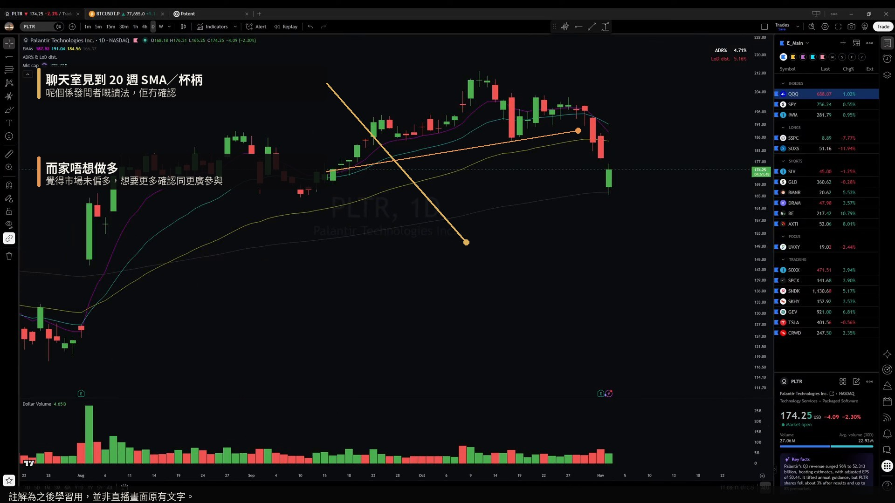

概要
杯柄係發問者嘅讀法，佢而家唔想做多
1:45:52 有人問點解對 Palantir 唔感興趣，並話見到 20 週 SMA 支持，似形成杯柄。呢兩點係發問者嘅讀法，佢冇確認。畫面約 1:46:21 係 PLTR 日線。佢只係話而家唔係好被任何 long 吸引，覺得市場未偏多；但呢個唔等於反彈唔可以再高。佢想要更多確認，同埋唔同板塊、唔同類型股票有更廣參與。Whisper 把 bounce 聽成 parent，YouTube 自動字幕作 balance，本頁按語境讀成 bounce。
圖一 · 主圖
PLTR 日線：杯柄係發問者嘅讀法
直播 1:46:21

原話
Why not interested in Palantir? I found support at the 20-week SMA, and it looks like a cup and handle in the making.
點解對 Palantir 唔感興趣？我見到 20 週 SMA 有支持，睇落似形成緊杯柄。
原話
I'm just not that attracted to any longs right now. I think the market is not favored to the long side, but it doesn't mean that the bounce here can't go high from here. I just want more confirmation and a little bit wider participation from different sector, different type of stocks.
我而家只係唔係好被任何 long 吸引。我覺得市場未偏多，但呢個唔等於呢度嘅反彈唔可以再高。我只係想要更多確認，同埋唔同板塊、唔同類型股票有更廣嘅參與。
點樣讀
20 週 SMA 同杯柄只係發問者提出，佢冇說「係，呢個係杯柄」。本頁唔把呢個形態寫成佢嘅結論。
佢嘅重點係市況同參與度：而家唔想做多，但仍承認反彈可以再高，只係想等到更多確認同更廣參與。
附註
注意事項
- 杯柄同 20 週 SMA 係發問者嘅讀法，佢冇確認。
- Whisper 把 the bounce 聽成 the parent，YouTube 自動字幕作 the balance here。本頁按語境讀成 bounce，並註明兩邊分歧。
- 畫面睇唔到成交價、倉位大細或者損益，所以唔寫死呢啲數字。
免責聲明：呢份係教育拆解，唔係投資建議，亦唔好當作買賣指示。